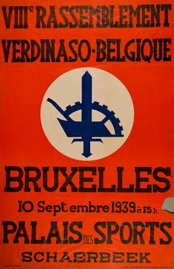
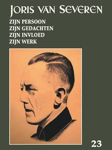

> nieuwsbrief > 23e jaargang, 3e trimester 2019
Inhoud

Kaftillustratie: Affiche 8e
Verdinaso-landdag, gepland te Brussel op19 september 1939, die
ten gevolge van
de nakende oorlogsdreiging niet kon doorgaan
Mededelingen
Hernieuwen ledenbijdrage voor 2019
Alhoewel
de
hernieuwing van de ledenbijdragen voor 2019 andermaal vlot
verliep blijven
enkelen het blijkbaar moeilijk hebben om per kerend spontaan
op onze eerste
oproep te reageren. Misschien wachten ze af wat het nieuwe
jaarboek brengen
zal? Met dit nummer van onze Nieuwsbrief weten
ze dit dan. Toetreden kan nog steeds, mits overboeking van de
ledenbijdrage.
Even herinneren: de minimumbijdrage blijft ongewijzigd en
bedraagt 29 . In
ruil daarvoor verzekeren we u de stipte toezending van het
nieuwe Jaarboek Joris
van Severen het 23e al
dat in de voorbije meimaand verscheen en van de vier nummers
van ons
kwartaalblad Nieuwsbrief
Joris van
Severen. Vanaf het bedrag van 35 boeken we u met dank
als steunend lid.
Vereffening graag via onze rekening IBAN: BE71 0001 7058 1469
BIC: BPOTBEB1
t.n.v. Studiecentrum Joris van Severen, Paddevijverstraat 2,
8900 Ieper.
Erratum Jaarboek Joris van Severen 23
(2019)
Op
p. 119 wordt
ten onrechte Denis de Rougemont vermeldt als
inter-viewer van Joris van
Severen anno 1935. Onder de illustratie op p. 120 staat de
juiste naam van de
interviewer, nl. Bertrand de Jouvenel.
Oproep omtrent Berten Leuridan
(1915-1938)
Pieter Jan Verstraete
Om een korte biografie over Robert Berten
Leuridan
(1915-1938) te schrijven, ben ik nog op zoek naar nadere
gegevens over hem. Hij
was afkomstig uit het West-Vlaamse Alveringem waar hij ook
begraven ligt in de
buurt van de graftombe van Cyriel Verschaeve; hij overleed als
student in
Leuven op 23 april 1938.
Ik ben nog op zoek naar volgende gegevens. Ik
bezit zijn
bidprentje maar weet niet of hij nog broers of zussen had. Is er
nog familie
van hem in leven? Waar deed hij zijn humaniora? Wat studeerde
hij in Leuven? In
welke omstandigheden overleed hij? Aan een ziekte of een
ongeval? Ook zoek ik
nog een paar fotos van hem. Tot nu toe heb ik deze nog niet
gevonden.
Berten Leuridan was actief binnen de
Dinaso-studenten. In
het eigenlijke Joris van Severen-archief, bewaard in het
universiteitsarchief
van Leuven, worden geen gegevens van hem bewaard. Kortom voor
iedere hulp en
informatie ben ik dankbaar.
Pieter
Jan Verstraete pieterjan.verstraete@skynet.be
Jaarboek Joris van Severen 23 (2019)
De
openingsbijdrage in
dit 23e jaarboek is van de hand van Evi Van Damme die met haar studie Ter Waarheid met het gedachtenleven in Vlaanderen en
in de wereld,
onderzoek verrichtte naar de Vlaamse poëzie in het politieke
maandblad van
Joris van Severen.
Met betrekking tot het af-sluitend tweede
deel van de
bijdrage van Romain
Vanlandschoot
over Wij beleven de
mislukking van het
parlementarisme Joris
van Severen
1926-mei 1927 - in het jaarboek van 2018 - is op de
drukkerij iets fout
gelopen: de nootnummers in de lopende tekst zijn er weggevallen!
Dit soort
hiaten brengt met zich mee dat het geheel van de bijdrage veel
aan waarde
verliest voor de historici bij hun navorsingen. In overleg met
de auteur werd
besloten de bijdrage gaaf te hernemen, teneinde het grote belang
van zijn
bijdragenreeks veilig te stellen. Terecht stelde een recensent
immers: Romain
Vanlandschoot behandelt voor de laatste keer de jaren 1926-1927
toen Van
Severen nog als parlementair actief was, maar steeds kritischer
stond tegenover
de partijpolitiek. Het verdient alle respect hoeveel
documentatie de auteur
raadpleegde en kritisch bekeek. Deze reeks teksten is een klein
monu-ment van
objectieve maar ingeleefde historiografie. Wel
lieten we bij deze
herneming de illustraties achterwege, die in het jaarboek 2018
de studie
ondersteunden.
In Een
verscheurende
keuze? De ideologische strijd van Charles van Renynghe tussen
het Verdinaso en
Rex snijdt Kristof
Papin nieuw
bronnenmateriaal aan met betrekking tot de ideële keuzes
waarvoor deze nobiljon
zich gesteld zag en waarover de bijlage veel onthult.
De verhoudingen tussen het Dietse
nationaalsolidarisme van
een Joris van Severen en het Duitse nationaalsocialisme bleken
van meet af aan
weinig convergentie te vertonen. Met Terechte
Duitse argwaan, blijkend uit documenten, ten overstaan van het
Verdinaso,
documenteert Maurits
Cailliau het
gegeven dat de Duitse instanties zich daar al snel ten volle van
bewust waren.
Ruud
Bruijns
herinnert met Edmond
Willem Pieter van
Dam van Isselt, rusteloos ijveraar voor de Benelux aan de
vele verdiensten
van deze Nederlandse Dinaso die ook in de jaren na de Tweede
Wereldoorlog de
Heel-Nederlandse idealen op een zeer verdienstelijke wijze wist
hoog te houden.
In Vijfentwintig
redenen
om Van Severen correct te framen schreef Hendrik Carette evenzoveel spitse en ter zake
doende als
beklijvende overwegingen bijeen omtrent Joris van Severen en
zijn hedendaagse
belagers, die het veelal aan de nodige historische kennis en
inzicht ontbreekt.
Vik
Eggermont
herinnert in zijn In de
schaduw van Louis
Gueuning
andermaal aan deze getrouwe volgeling die
levenslang het door
Joris van Severen getrokken spoor verder trok en scherper
uittekende middels de
door hem in het leven geroepen Joris van Severen-Orde. Gepoogd
werd na te
gaan wie zoal aan Gueunings zijde stond en wat over hen niet
mag vergeten
worden.
We weten het: onder de weggevoerden van mei
1940 zaten
vogels van diverse pluimage, zowel schuldigen als onschuldigen.
Uit Etienne
Verhoeyens verdienstelijke studie Spionnen
aan de achterdeur lichtte Nick
Peeters de gegevens over de Bruggeling Leopold
Fevery, de onschuld zelve? Na lectuur blijkt het
vraagteken wel overbodig
te zijn!
Na de bijdragen sluit het jaarboek af met
enkele
facsimiles van notities in het handschrift van Joris van
Severen en twee
gedichten, respectievelijk van Hendrik
Carette en Maurits
Bilcke.
__________________
N.a.v. Jaarboek
Joris van Severen
23 (2019. Gen., 208 p. Ledenprijs 29 ; niet-leden 35 .
Te bestellen via
overboeking van het bedrag op rekening BE71 0001 7058 1469
t.n.v. Studiecentrum
Joris van Severen, Paddevijverstraat 2, B.8900 Ieper.
Abbeville-boodschap 2019
Vik
Eggermont
U moet er zich blijvend van bewust zijn dat
gij hier staat,
en dit voor de zoveelste maal, voor de graftombe van een
staatsman. Een
staatsman zoals onze landen er weinig gekend hebben. Want met
zijn beweging
heeft hij méér gedaan dan enkel maar een poging ondernomen om
onze aloude Lage
Landen opnieuw te verenigen en in hun oude luister te
herstellen. Hij was geen
restaurateur, wel een vernieuwer, een gids doorheen de
duisternis die ons thans
omringt.
Zijn boog mikte véél hoger. Hem stond veel
meer voor ogen.
Hoger dan wat de huidige politieke dagjesmensen, de armzalige
politieke dwergen
die ons thans beheersen, zich kunnen voorstellen. Hij wilde
immers met zijn
poging tevens de basis leggen van een nieuw Europa door de
levende krachten van
onze natie opnieuw tot leven te wekken en hen de kans te geven
een nobel leven
te leiden, ver weg van de middel-matigheid, om niet te zeggen:
de laagheid, die
hun huidig bestaan ken-merkt. Volgens zijn inzichten moest dat
nieuwe Europa de
bakermat worden van echte sociale rechtvaardigheid, zodat ieder
menselijk wezen
de kans krijgt om zich ten volle als persoon te ontwikkelen.
Zijn Europa moest gedragen worden door een
diepbeleefde
solidariteit, waarin de macht van het geld zou beperkt worden
tot het doel
waarvoor het in het leven geroepen werd en waar alleen arbeid de
basis van onze
Europese economie zou vormen. We zijn daar thans voorwaar wel
erg ver van
afgedreven. Dat alles stond hem voor ogen toen hij de trappen
besteeg van de
kiosk, recht naar de dood. Met opgeheven hoofd, onge-twijfeld.
Jan Ryckoort, de
trouwe, had de zin van zijn daad begrepen. Hij volgde hem.
Daarom is Abbeville geen dieptepunt in zijn
levensloop, het
was een hoogtepunt. Met zijn beweging heeft hij geschiedenis
geschreven. Hij
heeft ons een imperium geschonken, een imperium van de geest.
Onver-woestbaar
en standvastig. Groots.
Dit moogt we nooit vergeten. Onze
aanwezigheid hier is niet
nutteloos. Zij getuigt voor de blijvende kracht en
onsterfelijkheid van zijn
gedachte.
Grote zielen verlaten ons nooit. Moge dit
besef ons blijvend
bezielen.
Grafrede
te Abbeville
op 19 mei 2019
Luc
Seynaeve,
voorzitter Stichting JVS
Opnieuw zijn we aanwezig te Abbeville ter
herdenking van
Joris van Severen en Jan Ryckoort. We bevinden ons staatkundig
op Frans
grondgebied. Het land, 2019, gekenmerkt door "les gilets
jaunes". In
het bijzonder wil ik dit item aan kaarten om dieper in te gaan
op het
ideeëngoed van Joris van Severen, nl. het solidarisme.
Het fenomeen "gele hesjes" betreft vooral
mensen
die niet veel gestudeerd hebben. De zogenaamde onderkant van de
ladder in ons
hiërarchisch geheel. Het woekert indringend in het sociale
weefsel van onze
maatschappij. We verwarren de gele hesjes niet met de genoemde
"black
blocs en uitgesproken relschoppers.
Als weinig gestudeerde mensen moeilijk of
niet aan het werk of
een job geraken, maak je het verschil tussen mensen nog veel
groter. Zo sterk
zelfs dat we kunnen spreken van een kloof. Dit resulteert enkel
in nog méér
gele hesjes. De "gele hesjes" zijn een indicator dat onze
sociaal-
economische visie moet 'gebaseerd worden op een filosofie, niet
van
"wij" en zij, doch van "ons allen". Dit betekent
solidarisme.
Het solidarisme van Joris van Severen
betekent sociale
cohesie: "De maatschappelijke orde is gebaseerd op de familie en
het
beroep. Het gezin vormt de natuurlijke levensbanden. Het gezin
moet overleven.
Daarvoor is arbeid nodig. Samen iets uitoefenen vormt
verbondenheid tussen
diegenen die de arbeid verrichten. Werkgevers en werknemers
werken samen ten
bate van het algemeen belang. leder is terzelfdertijd werkgever
en werknemer.
Solidariteit tussen het zogenaamde wij en zij is essentieel.
In elke
corporatie vormen alle beroepsgenoten, zowel leiders als
uitvoeders, éénzelfde
karakter" stelde hij terecht.
Dit zijn de waarden van het solidarisme. In
onze liberale
maatschappij is een sociale correctie onontbeerlijk. Het wij
en zij-verhaal
moet overstegen worden door solidariteit. Geen conflictmodel
doch een harmoniemodel.
Dit zou een fenomeen als de "gilets jaunes" uitsluiten.
Zo kun je vaststellen dat bepaalde politieke
ideeën van Joris
van Severen vandaag de dag toch nog actuele waarden kennen.
Bovendien
"richting-gevend" zijn ter realisatie van een meer sociaal
harmonische maat-schappij.
Het
bloemstuk op de
graven van Joris van Severen en Jan Ryckoort, namens de
Stichting Joris van
Severen, op 19 mei 2019
Wat meer solidarisme zou inspirerend kunnen
zijn om het
toenemende sociale onbehagen beter te duiden én op te lossen.
Vooral de
gestudeerde mensen hebben de plicht méér te wegen op de sociale
orde én vooral
te bewerkstelligen dat de kloof tussen de sterkeren en de
zwakkeren minder groot
wordt.
De "sterke" in een maatschappelijke
socio-economische structuur is terzelfdertijd de zwakke"; de
zwakke is
terzelfdertijd de "sterke". Met deze boodschap uitgaande van wat
méér
extra sociale reflex wens ik ieder een goede thuiskomst.
Scriptieprijs
Studiecentrum
Joris van Severen
Het Studiecentrum Joris van Severen is een
vereniging die de
studie naar de persoon en de ideeën van Joris van Severen
(1894-1940) wenst te
bevorderen. In de loop van de afgelopen decennia is daartoe een
archief
aangelegd rond Joris van Severen en zijn bewogen politieke
loopbaan, in het
bijzonder het Verbond van Dietse Nationaal-solidaristen
(Verdinaso). Dit
archief is in 2000 overgedragen aan de universiteitsbibliotheek
van de
Katholieke Universiteit Leuven en werd aldaar ondertussen
grotendeels
geïnventariseerd door dr. Bart Coppein. Het doel van de
archiefoverdracht was
om de wetenschappelijke studie over Joris van Severen en het
Verdinaso te
stimuleren. Het Studiecentrum wil deze studie actief gaan
bevorderen door het
instellen van een scriptieprijs voor studenten, waar een
geldbedrag van 500
aan is verbonden. Graag zouden we iedereen willen vragen om deze
scriptieprijs
onder de aandacht te brengen van studenten en van de bij u
bekende professoren.
Het Joris van Severen-archief aan de KU Leuven is nog
grotendeels onontgonnen
en een wetenschappelijke biografie ontbreekt vooralsnog. Er is
met andere
woorden sprake van historisch onontgonnen terrein en ook
ideologisch roept de
persoonlijkheid van Joris van Severen nog steeds veel vragen op
rond zijn
politieke ontwikkeling. Ook is er nog nauwelijks iets bekend
over de
samenstelling van zijn aanhang. Op basis van minimaal twee
inzendingen zal een
commissie binnen het Studiecentrum de prijs al dan niet
toekennen aan een
scriptie die handelt over de persoon Joris van Severen, het
Verdinaso of één
van de naoorlogse Nachfolge-bewegingen. De scriptie hoeft niet
noodzakelijk een
eindscriptie te zijn, maar dient minstens vijftien A4-paginas
omvatten. Het
Studiecentrum Joris van Severen zal de uitreiking van deze
scriptieprijs gepast
omkaderen en de auteur de gelegenheid bieden om de scriptie te
publiceren in
het jaarboek van het Studiecentrum. De auteur zal een exemplaar
van het
jaarboek en tien nadrukken ontvangen. Mocht u nog vragen of
opmerkingen hebben,
aarzel dan niet om contact met ons op te nemen. Voor de
beoordelingscommissie,
Drs. R.A.B. Bruijns p/a Secretariaat Studiecentrum Joris van
Severen,
Paddevijverstraat 2, 8900 Ieper.
Epost:
maurits.cailliau@skynet.be
Othmar
Spann -
andermaal
Maurits
Cailliau
Van Edwin Truyens mogen we elk jaar in zn Kort Manifest een vrij
uitgebreide
recensie van ons Jaarboek
Joris van
Severen lezen. Dat is uiteraard mooi meegenomen, al dient
daarbij meestal
wel enig chagrijn op de koop toe geïncasseerd te worden. Dit
gegeven blijkt
andermaal aan de orde te zijn in Kort
Manifest nr. 249 (februari-maart 2019) waarin het Jaarboek Joris van Severen 22 (2018) aan de beurt
kwam, en dit in
concreto voor wat onze bijdrage Het
Nationaalsolidarisme versus het Nationaalsocialisme in de
optiek van Othmar
Spann betreft.
Daar werd door de auteur terecht gesteld dat
Spann het
begrip volk de-finieerde als een spirituele en culturele
gemeenschap en niet
op etnische of raciale bloedgemeenschap, zoals het
nationaalsocialisme; reden
waarom de maatschappijleer van Spann o.i. nauwer aansloot op
nationaal-solidarisme
van het Verdinaso, waarmee de Spann-Kreis overigens contacten
onderhield.
Deze ideële verwantschap zint de recensent
blijkbaar niet
direct. Immers: het nationaalsocialisme waartegenover Spann
uiterst kritisch
stond was als imperialistische ideologie in volkomen
tegenspraak met het
nationalisme alhoewel het regime wel appelleerde aan
nationalistische
gevoelens, stelt hij.
Een wel uiterst betwistbare stelling voor wie
de
leerstellige bijbel van het nationaalsocialisme Mein Kampf ooit grondig doornam. Die weet
im-mers hoezeer
etnische uitgangspunten, zijnde bloed en bodem-theorieën,
daarvan de
kerninhoud vormen. Uiteraard staat er tussen etnisch denken en
bloed en
bodem-theorieën geen absoluut gelijkheidsteken, alhoewel ze
beide van dezelfde
premisses uitgaan en derhalve onderling verwantschap vertonen.
Dat het nationaalsocialistische regime zich
naderhand
ontpopte tot en teruggreep naar ronduit imperialistische
bestrevingen eigen aan
de Duitse geschiedenis sinds de eenwording onder Bismarck,
behoort misschien
tot de constanten van die recente geschiedenis, maar wortelt
o.i. geenszins
binnen de etnische leerstelligheden van het nationaalsocialisme
an sich
tenzij dan bij wijze van alibi. Het nationaalsocialistische
imperialisme was
binnen dit kader dan ook veeleer een uitwas die afbreuk deed aan
het oorspronkelijke
nationaalsocialistische concept van zijn gangmakers. Een
generatie daarvoor
toen het nationaalsocialisme nog diende geboren te worden had
Duitsland ten
overstaan van de Nederlanden al eens de imperialisme kaart
getrokken middels zijn
Flamenpolitik en daarbij völkische zeg maar etnische -
argumenten volop
als alibi laten spelen. Ook toen had men het etnische
vocabularium onder het
mom van rasverwantschap volop in stelling gebracht, teneinde het
achter-liggende
imperialisme te verdoezelen. Of bestaat er ook zoiets als
etnisch
imperialisme? En zou dit onderscheid dan het verschil uitmaken
tussen
enerzijds Duits- en anderzijds Frans imperialisme?
Wat Edwin Truyens in deze controverse als
bijzonder relevant
ervaart is dat blijkbaar noch Spann, noch Van Severen puur
etnisch dachten,
doch zich veeleer laafden aan de ideeën van Ernest Renan, de
Franse school, zeg
maar, meent hij. Renan stelde dat: Een natie een ziel is, een
geestelijk
beginsel. Twee dingen die eigenlijk samen een geheel zijn,
vormen deze ziel,
dit geestelijk beginsel. Het ene ligt in het verleden, het
andere in het heden.
Het ene is het gemeenschappelijk bezit van een rijke erfenis aan
herinneringen;
het andere is het tegenwoordig samenhorigheidsgevoel, de wens om
samen te leven,
de wil om opnieuw waarde te geven aan de erfenis die men samen
ontvangen heeft
(
). Een natie is dus een en al solidariteit, gebouwd door de
beleving van de
offers die men heeft ge-bracht en die men bereid is opnieuw te
brengen. Zij
veronderstelt een verleden, maar openbaart zich in het heden in
de concrete
bereidheid, de duidelijk verwoorde wens, om het leven
gezamenlijk voort te
zetten.
Dit korte fragment uit Renans rede Wat is een natie? stamt uiteraard uit een totaal
andere denkwereld
dan deze waarin het nationaalsocialisme zijn wortels had. Of
deze denkwijze en
de ideeën die er aan de basis van liggen van minder
intellectueel gehalte is
dan de etnische, die noch voor Spann, noch voor Van Severen het
alfa en omega
van hun politiek den-ken uitmaakte, hoeft wel geen betoog, zo
menen we. Evenmin
wordt daarbij afbreuk gedaan aan de idee van een organische
samenlevingsop-bouw
die Spann en Van Severen bepleitten.
_________________
PS: Het citaat van Ernest Renan putten we uit de recente
Nederlandse vertaling
van diens Quest-ce
quune nation?, Elsevier,
2013.
Omtrent José
Streel
"Outre
ses analyses et commentaires politiques, José Streel
multiplia, à partir de
1943, ses investigations d'ordre historique sur le passé de la
Belgique: il
revint ainsi à la vie d'étude qui répondait davantage à sa
véritable vocation.
Le souci de définir les assises d'un nationalisme belge
sérieux l'avait
toujours taraudé depuis qu'adolescent, il avait découvert
Maurras. En cette
matière, il se rapprocha toujours plus de l'effort de Joris
van Severen, qui
avait cherché, dans l'entre-deux-guerres, à fonder une
doctrine nationale
belge, de trouver à la patrie belge les racines de son
existence.
Le leader
du Verdinaso, nationaliste flamand, avait tout d'abord
préconisé la réunion
dans un même Etat de la Flandre et des Pays-Bas, donc la
suppression de la
Belgique en tant qu`Etat souverain. Par la suite, il avait
élargi sa pensée en
la basant sur l'idée d'un Etat Grand-Thiois ou
Grande-Néerlande, qui eût en
principe englobé les peuples qui, au moyen âge, avaient vécu
grosso modo entre
la Frise et la Loire, et dont la langue dialectale était le
Thiois. Dans
l'esprit de Van Severen, il s'agissait d'un agrandissement de
la réalité belge.
Het Dietse Rijk en Orde ("Pays-Bas et ordre") était devenu le
mot d'Ordre
des Dinasos.
Dans les
années trente, la question d'un nationalisme belge qui
suscite encore bien
des débats aujourd'hui et influence directement la vie
politique -- passionnait
les grands esprits, comme les professeurs Pirenne, de
l'Université de Gand, Van
der Essen, de l'UCL ou Van Kalken, de l'ULB Ceux-ci, traitant
en profondeur la
question, en arrivèrent globalement à la même conclusion: si
la Belgique
actuelle n'existait que depuis 1830, son héritage historique
véritable s'était
formé depuis le 15e siècle, au moins, époque du rassemblement
de nos régions
par les ducs de Bourgogne.
Un Streel
ne pouvait manquer d'éprouver de la sympathie pour un
Verdinaso élitiste et
autoritaire, dont la morale "solidariste" lui rappelait celle
du
fascisme italien. Il apparut de plus en plus au penseur que
Van Severen avait
trouvé la solution: il n'y avait de salut que du côté de
l'idée
grand-néerlandaise, l'idée de l'avenir. Des lors, dans ce
prolongement, Streel
avait fini par voir dans la séparation des Pays-Bas à la fin
du 16e siècle le
plus grand drame de notre histoire.
Drame dont
il s'ingénia à saisir toutes les modalités, les tenants et les
aboutissants.
Ecrivain politique, se faisant historien pour l'occasion, il
entreprit alors,
début 1944, la rédaction d'un ouvrage sur ce sujet: Le drame
du XVI siècle et
la question d'0ccident. Mais son départ précipité en Allemagne
allait
l'empêcher de le terminer et de le faire éditer.
Son
objectif était de prouver que les malheurs de la Belgique
trouvaient leur
source dans Le drame du XVIe siècle. Au début du 16e
siècle, les
territoires qui forment la Belgique et les Pays-Bas actuels
avaient été
regroupés, avec la Franche-Comté, en un Etat "collectif" des
Pays-Bas, aussi appelé Cercle de Bourgogne, par Charles Quint,
roi d'Espagne.
Celui-ci avait ainsi prolongé l'uvre des ducs de Bourgogne,
principalement
Philippe-le-Bon, rassembleurs, au siècle précédent, des
principautés
"belges" issues de la féodalité moyenâgeuse. Mais le fils de
Charles
Quint, Philippe II, très attaché au catholicisme, s'était
montré si despotique
qu'il avait provoqué un soulèvement dans les provinces
calvinistes du Nord. En
1579, celles-ci s'étaient alors séparées des Pays-Bas du sud,
catholiques, pour
former les Provinces-Unies. Selon Streel, là résidait le grand
drame: l'échec
d'une Grande Bourgogne; là s'était abîmé le rêve "grandiose"
d'un
Etat bourguignon ! Cette "tragédie" allait par la suite, dans
l'histoire, poser La
question d 'Occident,
c'est-à-dire celle du règlement du sort et du statut de ces
provinces divisées
dans l'optique d'une politique d'équilibre européen. A la
faveur de la deuxième
guerre mondiale et du bouleversement géopolitique qui
s'ensuivrait, peut-être
l'occasion se présenterait-elle, pensait Streel, de poser à
nouveau cette
question et de la régler une fois pour toutes. En fait, il
espérait secrè-tement
que la Belgique fût autorisée à élargir son territoire vers le
Nord et le Sud,
grâce à louverture économique et à l'union politique l Mais
en réalité, cette
idée n'avait pas une chance sur cent d'aboutir: elle était en
contradiction
avec la politique pangermanique. Hitler lui-même la trouvait
encore plus
néfaste que l'existence des royaumes indépendants de Belgique
et des Pays-Bas.
Inspiré par
ses recherches historiques, Streel multiplia les articles sur
ce sujet dans Le Soir.
C'était, en l944, la grande
nouveauté dans son activité journalistique. Souvent, il
s'agissait d'articles
formant l'ossature de son ouvrage en cours. Il voulait, de
cette manière, exalter
le passé de la Belgique, stimuler le sentiment national dans
le public et
établir des parallèles entre le passé et le présent. Il
suivait les éphémérides
nationales, profitait des anniversaires et des jours de fête
pour publier ses
billets d`histoire nationale, de combat aussi, car truffés
d'allusions en
faveur de l'indépendance et de l'unité du pays.
Par
exemple, 7 septembre 1543 - 7 septembre 1943. L'achèvement de
notre unité
territoriale, un article dans lequel il saluait l'uvre
d'unification de Charles
Quint, et indiquait, par un titre subtil, que les Allemands...
devraient en
tenir compte. Dès qu'il en avait l'opportunité, Streel
évoquait l'image de
personnalités historiques, reconnues pour leur sagesse. Ainsi,
Erasme ou le
courage de la modération, dans Le Soir
du 12 juillet 1943: "Au milieu de tant d'âpres figures que les
guerres de
religion avaient commencé de faire surgir dans cette dure
époque, si semblable
à la nôtre, il fut l'inlassable apôtre de la conciliation et
de la
modération." Sans doute Streel écrivait-il ici un peu pour
lui! A partir
de février 1944, le journaliste s'occupa régulièrement d'une
chronique
littéraire intitulée: Les
Essais et
l'histoire, dans laquelle il vantait surtout les
ouvrages relatifs au riche
passé des ducs de Bourgogne, nouvelle occasion de saluer notre
histoire
nationale. "
_____________
Uit:
J.M. Delaunois, De
lAction catholique à
la collaboration José Streel. Edition Legrain Bourtembourg, Courcelles
Bruxelles, 1993,
256 p. Citaat pp.124-126.
Nvdr: José Streel
was wellicht de meest invloedrijke intellectueel binnen de
Rex-beweging.
Alhoewel hij in 1943 afstand nam van die beweging werd hij in
1946 in het spoor
van de repressie gefusilleerd.
In Memoriam
Lode van Dessel (Lier, 12 maart 1932
Nijlen, 1 mei 2019).
Lode was lid van het Jong-Dinaso. Zijn vader Frans van Dessel
was medestichter
van de afdeling van Lier en bleef lid tot op het einde van
zijn leven. Hij overleed
in februari 1940. Hij ontmoette diverse keren Joris van
Severen. Lode was na
WO.II een van de eerste leden van het Algemeen Diets
Jeugdverbond (ADJV).
Sprokkels
In deze rubriek
verwijzen we
zonder veel commentaar naar recente publicaties waarin Joris
van Severen en/of
het Verdinaso vermeldt worden. We citeren de meest treffende
passussen
woordelijk zonder daarin volledigheid na te streven. We
verzoeken onze lezers,
met ons, uit te zien naar publicaties die voor deze rubriek
'stof' kunnen
leveren en ons kopie van de betreffende passages toe te
sturen.
Wereldgeschiedenis
van
Vlaanderen
In 2018 verscheen de volumineuze Wereldgeschiedenis van Vlaanderen die in datzelfde
jaar al aan haar
3e druk toekwam. De uitgave kan dus alvast een commercieel
succes genoemd
worden. Volgens de flaptekst schetst het omvangrijke boek (566
pp.) een divers
en rijkgeschakeerd beeld en zijn de gelaagdheid en
meerstemmigheid van dit
boek het resultaat van de collectieve inspanning van een groep
eminente
historici, essayisten en schrijvers.
Het opzet bestond er in op basis van
jaartallen gaande van
het jaar 200 tot het jaar 2017 telkens stil te staan bij een
item dat het
betreffende jaar kenmerkte. Voor het onheil volle jaar 1940
bleef men
uitsluitend stilstaan bij De
executie van
Joris van Severen aan de muziekkiosk van Abbeville. In het
korte bestek van
amper zes paginas (443-448) slaagde de auteur, Dieter
Vandenbroucke, er in een
afgewogen beeld op te roepen van Joris van Severen en zijn
beweging en,
uiteraard van de moordpartij op 20 mei te Abbeville.
_______________
N.a.v. Wereldgeschiedenis van
Vlaanderen,
uitgeverij Polis, Kalmthout, 2018.
Al
mijn illusies
bloeien
(
) Ook Herman werkt nu vanuit Brugge mee
door allerhande
knip-sels over Film uit Duitse en Engelse bladen te bewerken, te
vertalen en
klaar te maken voor Brussel. Hij spant zich in om zoveel
mogelijk abon-nementen
te plaatsen bij Westvlaamse boekhandels, bij vrienden en
kennissen. Eén van hen
is Joris van Severen. Hoe en wanneer Herman de
Vlaams-nationalistische
politicus persoonlijk heeft leren kennen is niet duidelijk. Via
de gemeenschappelijke
vriend Nand Pauwels die kennis heeft met de zus van Joris? In
ieder geval zijn
ze bij de start van het blad Ter Waarheíd
in februari 1921 al goede maatjes. Herman zorgt ervoor dat zijn
vriend en
dichter Urbain van de Voorde met zijn poëzie in de eerste
jaargang van het blad
goed aan bod komt. Hijzelf zal in de tweede jaar-gang een paar
studietjes
publiceren over zijn al oude liefdes August Strindberg en Oscar
Wilde. En het
is allicht geen toeval dat het allerlaat-ste nummer van het
amechtig geworden Ter
Waarheid verschijnt bij de Brugse
uitgeverij Excelsior van Achiel Geerardyn, bij wie Herman op
eigen kosten de
allereerste poëziebundel van Urbain uítgaf. Tijdens een lange
middag bij Van
Severen, op de Gentse Graslei 13, vestigt Herman de aandacht van
de ambitieuze
notariszoon op Le Cinéma
international.
Die kerel ínteresseert zich uitermate aan Ciné-aangelegenheden.
k Sprak hem over
je revue. Hij is terstond aan een stalletje de nummers gaan
kopen. Stuur hem
geregeld een nummer op. Hij zal telkens daarover een recensie in
Ter Waarheíd
publiceren. Dit tijdschrift
is modern, Vlaams en internationaal en is voor den ogenblik, t
meest
verspreide, en in Vlaanderen en in Holland. (
)
_________________
Erik
Defoort, Al mijn
illusies bloeien
(over Paul Pée), Houtekiet, 1991, pp. 65-66. De Herman waarvan
sprake was een
broer van Paul Pée.
Nog omtrent James Joyce van Joris van
Severen
Dat Joris van Severen Joyce heeft vertaald
staat buiten
kijf. Maar Joyce heeft Joris van Severen NIET ontmoet tijdens
zijn verblijf in
Oostende, noch Clément Pansaers. Zie het artikel Bulgen Hories: James Joyce in België van Geert
Lernout in De
Brakke Hond, jg. 10, 1993, p. 126: Overigens waren ondertussen in België toch enkelen in
Joyce
geïnteresseerd ge-raakt: de surrealist Clément Pansaers
ontmoette Joyce in
Parijs, net toen Ulysses
gepubliceerd
werd. En Joris van Severen
publiceerde in 1923 een vertaling van een lezing over Joyce
door Valéry Larbaud
in zijn tijdschrift Ter
Waarheid. Drie jaar later kwam
Joyce dan zelf naar
België.
Enige
tegemoetkoming?
(
) Omstreeks midden 1934 werd het Verdinaso
alsmaar
verdachter in de ogen van Duitse kringen. De diepere redenen
daarvoor waren
Joris van Severens op handen zijnde Nieuwe Masrichting van
juli 1934, die een
breuk met het volksnationalisme en radicaal anti-belgicisme
behelsde en zijn
vermoedelijke contacten met Franstalige fascistische kringen.
Ongeveer
tegelijkertijd begon fascistisch Italië meer interesse voor het
Verdinaso te
tonen.
De Nieuwe Marsrichting had tot gevolg dat
een aantal
uitgesproken nationaalsocialisten en antisemieten, zoals Gustaaf
Vanniesbecq en
Ward Hermans het Verdinaso de rug toekeerden. (
).
_________________
Bron: Lieven Saerens, Haat is een deugd: het credo van de Jodenjagers,
Lannoo, Tielt.
JORIS VAN SEVEREN - bij Uitgeverij Polis,
verwacht begin 2021
In
zijn boek over
de charismatische Verdinaso-oprichter en dandy Joris van Severen
(1894-1940)
wil Dieter Vandenbroucke de opmerkelijke spagaat tussen het
publieke en
persoonlijke leven van de politicus belichten.
_________________
Bron: http://dietervandenbroucke.be/
De
Liga: een buitenparlementaire antifascistische knokploeg
in uniform
(
) In Vlaanderen
zag de Liga
zichzelf niet alleen als een antimili-taristische club maar
ook als een buitenparlementaire antifascistische
knokploeg in uniform.
Uit zijn onderzoek waaruit we hier maar enkele punten kunnen
aanreiken
concludeert auteur Ruud Bruijns dat de Liga een significant
overwicht had ten
opzichte van bijvoorbeeld het Verdinaso. De Liga slaagde er
vaak in om
Dinaso-propagandatochten en -vergaderingen uit elkaar te
slaan. Ze ging hier
meer dan eens met bruut geweld te werk.
Een hoogtepunt in haar onstuimige
geschiedenis was de
verhindering van de Liga van de geplande Verdinaso-landdag van
22 juli 1933 in
Mechelen. Het was een pure Liga-actie waarbij de lokale BWP
zich ont-hield van
deelname. De 250 Dinaso-militanten hadden geen verhaal tegen
de ruim
tweeduizend blauwhemden van de Liga. Sindsdien hield de
leiding van het
Verdinaso de plaats van haar landdagen zorgvuldig, en dat tot
op het laatst,
geheim. (
)
________________
N.a.v. Ruud
Bruijns, Liever
revolutie dan oorlog - De
Internationale Socialistische Anti-Oorlogsliga. Recensie
door Pieter Jan
Verstraete op:
https://doorbraak.be/recensies/de-internationale-socialistische-anti-oorlogsliga/
Encyclopedie
van de Franstalige
Nieuwe Orde in België
(
) De encyclopedie van Eddy de Bruyne opent
trouwens met
de naam 'Abbeville', Abbekerke zo u wil. De plaats waar Joris
van Severen dood-geschoten
werd. De Bruyne schrijft hier niet alleen over de moord op Van
Severen, maar
heeft ook oog voor de achtergrond van de andere slacht-offers
van het bloedbad.
Relatief bekende Vlaamse Dinaso's zoals Mau-rice (John) Hagemans
en relatief
onbekende Dinaso's zoals ene Pierre Rosiers worden door De
Bruyne ook voor het
voetlicht gebracht. John Hagemans is een oud-marxist die via de
Dietse
Militanten Orde leider wordt van de 'Jeunesse Rexiste' om
uiteindelijk als één
van de eersten het Waals Legioen te vervoegen. De jeugdleider
sneuvelt in
Rusland en wordt postuum bevorderd tot officier. Pierre Rosiers
kreeg tijdens
de oorlog een leidende functie binnen de 'Jeunesse Légionnaire',
de een-heidsjeugdbeweging
in Wallonië. Verder kom je natuurlijk ook mensen als Jacques
Boseret tegen.
Boseret was de cultureel directeur van het Verdinaso in de
Romaanse Provincies
tot hij op 26 juni 1940 vervangen werd door de - in Vlaanderen
veel bekendere -
Louis Gueuning. In tegenstelling tot Gueuning zou Boseret zich
met Rex in het
collaboratie-avontuur storten. Daarom kan ik het maar moeilijk
vatten dat ook
Louis Gueuning met naam en toenaam staat te pronken in een
encyclopedie over
collaboratie. Na de oorlog werd hij inderdaad vervolgd, maar
zijn dossier werd
zonder gevolg geklasseerd omdat Gueuning nu eenmaal een
pertinent tegenstander
van de bezetter was. Tenzij de auteur van de encyclopedie echt
wel de
volledigheid wilde nastreven natuurlijk. U leest het, te veel om
allemaal op te
sommen in één artikel. Wie deze ency-clopedie dichtslaat kan
veel zeggen en
denken over de collaboratie in Wallonië, maar hij of zij kan
nooit meer zeggen
dat de collaboratie in het land van Samber en Maas maar een
kleine aangelegenheid
was.
___________________
Bron: Kort
Manifest, nr. 250: recensie door
Kevin Moonen van: Eddy de Bruyne, Encyclopédie
de loccupation, de la collaboration et de lordre nouveau
en Belgique
Francophone (1940-1945), Cercle Segnia, Rue des Evêts
49, La
Roche-en-Ardenne, 2016, 574 pp.